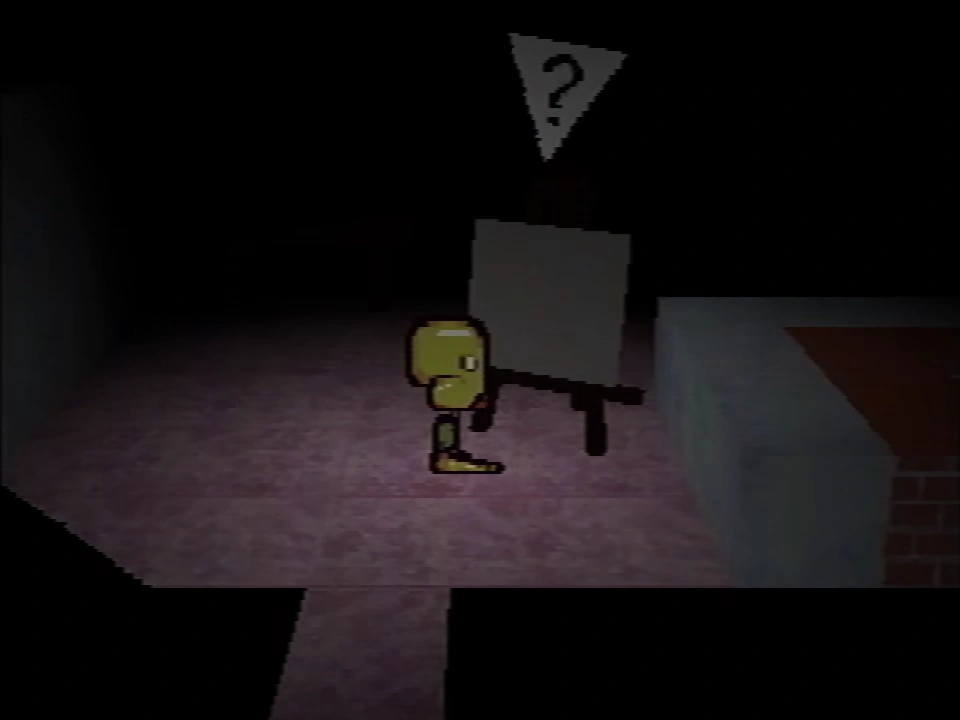
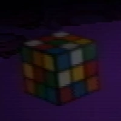

Child Library

The easel with no face selected.
The Child Library is a building that is located on the other end of the long hallway with "Good Grief and Alas" written on the wall. Paul first finds and uses it in Petscop 3.
Outside the Child Library
The area surrounding the Child Library takes place in a long hallway. On the wall leading up to the Child Library, "GOOD GRIEF AND ALAS" is written. To the right of the exterior of the Child Library, there is an opening in the wall that does not have anything beyond it.
The exterior of the Child Library has its entrance on the left and a hatch on the right. The hatch can be turned by interacting with it. Pets that qualify as "people" - as in, the variations of Care - can be deposited in the hatch through opening the Pets menu while standing in front of the hatch.
Inside the Child Library
Inside the Child Library building, there is a canvas that can be interacted with to choose a combination of facial features (referred to at one point as the "face system"). After an entry is set, the area rumbles for approximately ten minutes before the room is accessible. Inputting faces shown elsewhere in the game result in specialized rooms. Exiting the Child Library resets the current face input. There are a total of 288,000 possible face combinations.
Regular rooms
Rooms that do not replicate a given face appear to be randomly generated. All rooms have a set of tiles for the floor and wall, a color set, and objects on the table.
There are children sitting on the beds.
"Mike without eyebrows"
This room appears when Mike's face without eyebrows is entered. Paul visits this room in Petscop 7.
The floor pattern has a yellow background with gifts, a road, stars, and a PlayStation controller on the walls. This has great significance, as Mike's gravestone says "Mike was a gift", and Petscop originally being created as a gift for Mike. On the table is a blue car like the one that drives down the road in Petscop 2 and a Rubik's Cube.
There is a boy figure sitting on the bed.
")
Special rooms
Mike's room
Michael Hammond's room can be accessed by entering the face that appears on his gravestone. Paul visits this room in Petscop 3.
Mike is not inside right now. He is dead.
You may visit his room.
The floor pattern has a dull red background containing glasses, a clown face, a flower symbol similar to the one on Even Care with only 4 petals, and an O-block. On the table is a small red tool and what appears to be tweezers.
")
")
Care's room
Care's room can be accessed by entering the face that appears outside the Flower Shack, where Care NLM is located. Paul visits this room in Petscop 3.
Care is missing.
You may visit her room.
The floor and walls are grayscale with a pattern of paint rollers and flowers like the one in the shed. On the table is a small red tool and crayons, which will appear again in the school basement.
On the back wall of the room is a note that can be interacted with.
Your wife says,"Care isn't growing eyebrows."
You say, "That's a puzzle."
You're secretly very excited to hear this news.
You're in the bathtub thinking about her.
I have a guess at which child you'll pick next.
When you find her room, the passage to my right will lead to her.
She'll appear from the darkness, limping, and I'll shoot her in the head.
Tiara says young people can be psychologically damaged "beyond rebirthing".
A young person walks into your school building.
They walk in with you. You're holding their hands.
They come out crying into their hands, because nobody will love them, not ever again.
"Nobody loves me!"
They wander the Newmaker Plane.
When Paul deposits Care NLM in Petscop 9, she appears in this room, and can be interacted with to catch her again.
")
"Care-with-Mike's-Eyebrows" room
This room is accessed in Petscop 7 when Paul inputs Care's face, except with Mike's eyebrows. There is no entry textbox.
The wall and floor pattern is purple and features a gear (possibly related to the windmill), the flower symbol also seen in Mike's room that resembles the ones on Even Care, and a distinct X shape.
On the table are letter blocks, and a censored object. The blocks are C (pink), R (red), and E (blue). They seem to be about to spell Care. Under the black censor obscuring the right object there is a sliver of red. Paul cannot discern if the censored object indicates any importance of the room, and suggests the object may be another random item that could appear in any room.
")
")
Lina's room
Lina Leskowitz's room can be accessed by entering the face that appears inside the windmill, or on her gravestone. Paul visits this room in Petscop 9.
You found her.
You may visit her room.
The floor and walls are white/grey with gears (similar to the windmill), triangles, and the flower symbol that resembles the one on Even Care but with four petals. On the table is a small red tool and a miniature windmill. This room is noticeably brighter than the others.
On the back wall of the room is a note that can be interacted with.
You must have guessed, but I was looking through your things.
I found that picture of you from 1977, standing in front of an old windmill with your friend.
You went there, and it was a bad idea. Your friend and the windmill both disappeared into thin air.
Her sister was holding the camera. She took another picture minutes later: just you, no windmill, and no friend.
You married her sister, and years later, your friend was reborn as your daughter.
Your wife won't admit this is true, but I know it, because I found the evidence.
Your friend never returned with you, and the windmill was gone. I went to see it myself. Where is it? What did you do?
-Rainer, Newmaker
This note discusses the windmill's disappearance, as presented by Rainer.
There is a dark passage in the back of the room that leads to the party room.
")
{kind=link}
{kind=link}
{kind=link}
{kind=link}
{kind=link}
{kind=link}
{kind=link}
{kind=link}
{kind=link}
{kind=link}
{kind=link}
{kind=link}
Notes
{kind=link}

{kind=link}
A Rubik's Cube in the Child Library, from Petscop 3
The Rubik's Cube that appears on the table in some rooms is unsolvable, since it has blue colors on two faces of a side block.
When Paul enters Lina's room, there is a guardian that looks exactly like Paul, reading a note on the wall. It disappears through the right side of the room. A minute later, Paul makes the exact same movement, reads the note, and disappears into the next room. It is unknown how this relates to the known rules of multiple players and time syncs.
Theories
On the hallway
The "Good Grief and Alas" writing on the hallway wall is a reference to the Dr. Seuss book "Daisy-Head Mayzie" originally published in 1994. There are other connections and references to Daisy-Head Mayzie in Petscop. See Daisy-Head Mayzie connections for more information.
On the Child Library
The name "Child Library" may be a metaphor for foster care, where children could be thought of as being "borrowed". It's notable that the story of Petscop contains multiple kidnappings.
In some countries and regions, six months is the amount of time social services will take care of a child before offering them for adoption.
The slot in the exterior of the Child Library may be a baby hatch, a place for mothers to anonymously abandon their newborn children in a safe place they will be cared for.
On rooms
Most of the "special rooms" have a small red tool on the table. This may be of some significance.
According to Petscop 12, facial features are of "family", implying faces that result in specialized rooms are of people considered "family".
While the "Mike without eyebrows" room does not appear to be a special room, there is a heavy emphasis on cars and roads in it, which may be related to Toneth. Mike is mentioned briefly in Toneth's description when he comments on Toneth, "Funny stupid blob monster". Then, a story about a dog being hit by a car is told.
The censored object in the "Care-with-Mike's-Eyebrows" room may be Casket 1.
Paul's commentary from the beginning of Petscop 11 indicates that he found "[his] room". It is possible that this refers to "Care-with-Mike's-eyebrows" room, making it his room.
| Gift Plane | Gift Plane · Even Care · Odd Care · Work Zone |
|---|---|
| Newmaker Plane | Newmaker Plane · Office · Grave room · Tool room · Quitter's Room · Child Library · Windmill · Party room · House · School |